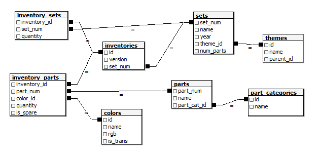
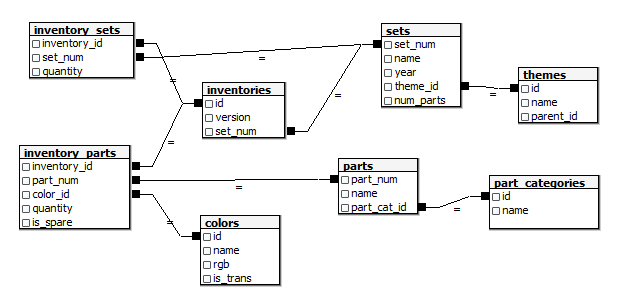

SQL Tutorials: Joins
DISCLAIMER: Before starting this tutorial, it's highly recommended that you download an RDBMS to follow along.
We recommend using either PostgreSQL, MS SQL Server, or MySQL.
Congratulations! You have now progressed to the Intermediate-Level Tutorials! The topics covered in the Beginner-level
laid the groundwork for this level. To start off the Intermediate level, we will transition from writing queries
with one table to writing queries with multiple tables using Joins. In this tutorial, we will cover the following learning objectives:
- INNER Joins
- LEFT and RIGHT OUTER Joins
- FULL OUTER Joins
- CROSS Joins
- SELF Joins
What is an Inner Join?

Summary
- In relational databases, A Join is how you query data from multiple tables.
- The Inner Join is the most common type of join and consists of gathering all the data from two tables based on matching Primary and Foreign Keys. To conduct an inner join, use the following syntax:
SELECT *
FROM [tableA]
JOIN [tableB] ON [tableA].[primaryKey] = [tableB].[foreignKey]; - NOTE: The "INNER" keyword is optional and is rarely used when writing queries in a business context.
What are Left and Right Joins?
NOTE: To avoid confusion, please stop the video at the 6:16 mark.

Summary:
- The LEFT JOIN retrieves all rows in the left table and all rows that match the primary key
in the right table. All other rows that don't match the primary key will be null. To create a left join, use the
following syntax:
SELECT *
FROM [tableA]
LEFT JOIN [tableB] ON [tableA].[primaryKey] = [tableB].[foreignKey]; - The RIGHT JOIN retrieves all rows in the right table and all rows that match the primary key
in the left table. All other rows that don't match the primary key will be null. To create a right join, use the
following syntax:
SELECT *
FROM [tableA]
RIGHT JOIN [tableB] ON [tableA].[primaryKey] = [tableB].[foreignKey]; - NOTE: The "OUTER" keyword, as shown in the video, is optional. It's a best practice to leave that keyword out as it's implied.
- NOTE: These types of joins can be used interchangeably by simply changing which table you specify in the "FROM" clause. However, it's a best practice to use LEFT JOIN as default to keep your queries consistent.
What is a Full Join?
Summary:
- The FULL JOIN is used to retrieve all rows from both
tables contained in the join clause, whether or not they match the primary key. To create a full join, use the
following syntax:
SELECT *
FROM [tableA]
FULL JOIN [tableB] ON [tableA].[primaryKey] = [tableB].[foreignKey];
What is a Cross Join?

Summary:
- The CROSS JOIN creates a cartesian product. A Cartesian Product is when you
create every possible combination of attributes. To create a cross join, use the following syntax:
SELECT *
FROM [tableA]
CROSS JOIN [tableB]; - NOTE: These are easily the least used joins because they tend to provide little value. However, they are useful when you need to join a table to a temporary table created using a CTE (discussed later) that doesn't have any connection to the original table.
What is a Self Join?

Summary:
- The SELF JOIN is used to extract an underlying hierarchy within
a single table. This is used the following
syntax:
SELECT *
FROM [tableA]
JOIN [tableA] AS [alias] ON [tableA].[primaryKey] = [alias].[foreignKey]; - NOTE: Self Joins use the concept of recursion to create recursive queries. These are used when the foreign key in the table refers to the primary key of the same table. These are commonly used in hierarchical structures, such as organizational hierarchies or governmental hierarchies, where there are multiple levels.
Exercise
Congratulations! You just completed the Joins and Unions Tutorial! To help test your knowledge, let's use
the "NBA" database to run some queries using multiple tables.
**It's highly recommended that you
complete the exercise outlined in the previous tutorial before beginning this exercise.**
Instructions:
DISCLAIMER: This Exercise requires some experience with DDL (creating database objects). If you're unfamiliar with this part of SQL, view the following tutorial: DDL Tutorial
- Open your RDBMS Client (e.g., MySQL, PostgreSQL, MS SQL Server).
- Download the Exercise Files here.
- Use the ERD Below to Create the Tables and Relevant Keys*:

*It's recommend to create the tables in the following order: themes, part_categories, colors, parts, sets, inventories, inventory_sets, inventory_parts.
The Database used in this exercise includes data on hundreds of Lego sets and their associated parts, colors, and themes.
- Using the "lego" database, Write the Following Queries:
- Write a query that counts the number of times any part with the substring "Base" occurs in the total inventory.
- Write a query that counts the number of sets in inventory that have a theme of "Fire".
- Write a query that shows all parts that are out of stock (not in inventory).
- Write a query that shows every possible combination of "Sets" and "Themes".
- Write a query that shows every theme and it's parent. Only include the child's ID, child's name, child's parent's ID, and the parent's name.
- Exercise Completed! Click here to view the answers.
Have any issues with the above exercise? Post your question on Discord!

*It's recommend to create the tables in the following order: themes, part_categories, colors, parts, sets, inventories, inventory_sets, inventory_parts.
The Database used in this exercise includes data on hundreds of Lego sets and their associated parts, colors, and themes.
- Write a query that counts the number of times any part with the substring "Base" occurs in the total inventory.
- Write a query that counts the number of sets in inventory that have a theme of "Fire".
- Write a query that shows all parts that are out of stock (not in inventory).
- Write a query that shows every possible combination of "Sets" and "Themes".
- Write a query that shows every theme and it's parent. Only include the child's ID, child's name, child's parent's ID, and the parent's name.
Have any issues with the above exercise? Post your question on Discord!